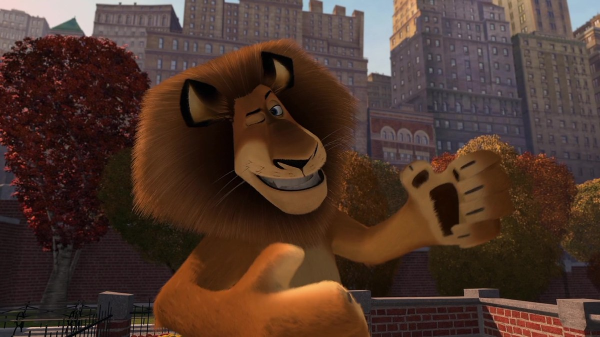

King of New York — Performer and Predator
The star and the savage share one body — the show builds the Spotlight, the hunger spends it, and the edge between them is where the king lives.

King of New York — Performer and Predator
The star and the savage share one body — the show builds the Spotlight, the hunger spends it, and the edge between them is where the king lives.
Feature map
Level-by-level features, as the figure refined them.
Center Stage
Passive · Spotlight pool (maximum 2 × PB).
You carry a pool of Spotlight (maximum 2 × PB; it begins at 0). You gain 1 Spotlight, at most once per round, when you: hit a creature with an attack after moving at least 20 ft on your turn; succeed on a CHA (Performance) check during combat; or an ally uses the Help action to aid your attack. You may spend Spotlight on this technique's features; unspent Spotlight fades when combat ends — the crowd's memory is short.
Showstopper
Bonus action · 1 Spotlight.
You steal the scene. Choose one flourish. Grand Entrance — move up to 20 ft without provoking opportunity attacks. Dramatic Toss — your next attack this turn deals an extra 1d8 damage and you may shove the target 10 ft. Working the Crowd — each creature of your choice within 15 ft makes a WIS save against your CE save DC or is charmed by your performance until the end of your next turn. Never let them see the teeth.
The Triumphant Roar
Action · 2 CE.
You unleash the roar that shook the zoo. Each creature in a 30-ft cone makes a WIS save against your CE save DC: 3d8 thunder damage and frightened for 1 minute (it repeats the save at the end of each of its turns) on a failure; half damage and no fright on a success. Allies in the cone are unaffected — the king knows his audience.
Give In to the Hunger
Bonus action · 2 CE.
You stop performing and start hunting: enter the Predator state for 1 minute. While in Predator, your weapon and unarmed attacks deal an extra 1d6 slashing damage, you have advantage on attack rolls against creatures below half their hit points, and your speed increases by 10 ft. But the hunger is honest: at the start of each of your turns in Predator, make a WIS save (DC 10 + the number of rounds spent in Predator); on a failure you must use your action to attack the nearest creature, friend or foe — you cannot tell them apart. You may end Predator as a bonus action. Riding the edge: while in Predator, when you hit with an attack you may spend 1 Spotlight to add 2d6 slashing damage — each time you do, the control save DC rises by 1 for the rest of this Predator.
Someone Calls Your Name
Passive.
A friend's voice cuts through the hunger. You make Predator control saves with advantage while an ally you can see is within 30 ft of you and able to speak. When you voluntarily end Predator, you gain 1 Spotlight — the crowd loves a comeback. The star always knows his friends. Almost always.
Encore
Passive.
Your Spotlight maximum becomes 3 × PB. You may use Showstopper as part of the Attack action instead of a bonus action — the show never waits for the action economy.
Maximum, Domain, or equivalent.
Capstone material.
The Wild Takes the Stage
For one glorious, terrible moment you surrender completely — and the surrender is the performance. Each creature of your choice within 30 ft makes a WIS save against your CE save DC: 8d10 thunder damage and frightened for 1 minute on a failure; half damage and no fright on a success. Then you may move up to your speed and make one claw attack (an unarmed strike dealing an extra 2d6 slashing damage) against each creature you move past, up to 3 attacks. When the Maximum ends, Predator ends and you gain 1 level of exhaustion — the king always pays for the show.
The King Remembers
You have mastered the edge. You may enter Predator as a bonus action without spending CE; riding the edge no longer raises the control save DC; and once per long rest, when you fail a Predator control save, you may choose to succeed instead and gain 2 Spotlight — the roar lands, the friends are safe, and the crowd goes wild. The teeth are still there. They are just on a leash now.
Build-defining options.
These are optional character-building feats. You must meet each listed prerequisite before selecting it.
Opening Act
The show starts before the fight. During a short rest, you may perform for your allies (CHA (Performance) DC 13): on a success, you begin your next combat with 1 Spotlight already banked — the crowd arrived early.
No One Upstages the King
When a creature within 30 ft of you succeeds on a CHA check to impress, charm, or command others, you may use your reaction to out-perform it: contest your CHA (Performance) against its check result; if you win, you gain 1 Spotlight and it has disadvantage on its next CHA check — upstaged, in front of everyone.
Playing With Your Food
The predator toys with its prey. While in Predator, when you hit a creature below half its hit points, you may deal no damage and instead grapple it (escape DC equals your CE save DC) and frighten it until the end of your next turn — dinner can wait; the show cannot.
Curtain Call
Your roar lifts as well as it terrifies. When you use The Triumphant Roar, you may choose to rally instead: no cone, no damage — each ally within 30 ft gains temporary hit points equal to 1d8 + your CHA modifier + your PB and ends the frightened condition on itself. Same lungs, different show.